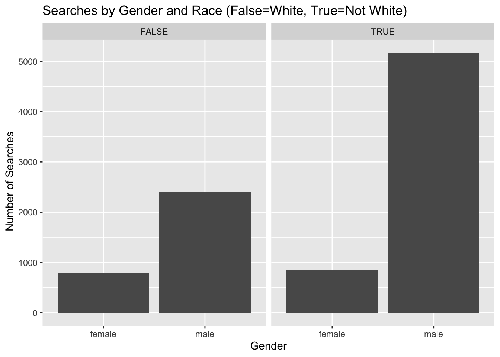

Portfolio 1
The projects should be numbered consecutively (i.e., in the order in which you began them), and should include for each project a description of the goal, the product (computer program, hand graph, computer graph, etc.), the data, and some interpretation. Reports must be reproducible and of high quality in terms of writing, grammar, presentation, etc.
library(tidyverse)
library(tidyr)
library(scales)library(readr)
nc_winston_salem_2020_04_01 <- read_csv("nc_winston-salem_2020_04_01.csv")## Warning: One or more parsing issues, call `problems()` on your data frame for details,
## e.g.:
## dat <- vroom(...)
## problems(dat)## Rows: 452560 Columns: 29
## ── Column specification ────────────────────────────────────────────────────────
## Delimiter: ","
## chr (14): location, county_name, subject_race, subject_sex, officer_id_hash...
## dbl (2): raw_row_number, subject_age
## lgl (11): arrest_made, citation_issued, warning_issued, contraband_found, c...
## date (1): date
## time (1): time
##
## ℹ Use `spec()` to retrieve the full column specification for this data.
## ℹ Specify the column types or set `show_col_types = FALSE` to quiet this message.The data in this set contains crime numbers and statistics from Winston-Salem between the years 2000 and 2015.
The goal of this portfolio piece is to create plots that will visualize data contrasting the gender and race in regards to the amount of searches conducted. Although in this portfolio, I will not be able to make a judgment about whether discrimination exists because I will not be creating a plot nor run statistical tests in regards to the data proportional to the population.
I found this dataset using Stanford’s open policing database and selected it because of it’s topicality to Wake Forest.
glimpse(nc_winston_salem_2020_04_01)## Rows: 452,560
## Columns: 29
## $ raw_row_number <dbl> 3225, 3227, 3232, 3235, 3237, 3240, 3243, 3245,…
## $ date <date> 2000-01-11, 2000-01-12, 2000-01-12, 2000-01-12…
## $ time <time> 23:30:00, 00:59:00, 21:05:00, 21:05:00, 22:37:…
## $ location <chr> "Unknown", "Unknown", "Unknown", "Unknown", "Un…
## $ county_name <chr> NA, NA, NA, NA, NA, NA, NA, NA, NA, NA, NA, NA,…
## $ subject_age <dbl> 49, 21, 22, 21, 19, 19, 21, 19, 20, 24, 26, 23,…
## $ subject_race <chr> "black", "black", "white", "black", "black", "b…
## $ subject_sex <chr> "female", "male", "male", "female", "female", "…
## $ officer_id_hash <chr> "22e35044ed", "22e35044ed", "22e35044ed", "22e3…
## $ department_name <chr> "Winston-Salem State University Police Departme…
## $ type <chr> "vehicular", "vehicular", "vehicular", "vehicul…
## $ arrest_made <lgl> FALSE, FALSE, FALSE, FALSE, FALSE, FALSE, FALSE…
## $ citation_issued <lgl> FALSE, TRUE, FALSE, TRUE, FALSE, TRUE, TRUE, TR…
## $ warning_issued <lgl> TRUE, FALSE, TRUE, FALSE, TRUE, FALSE, FALSE, F…
## $ outcome <chr> "warning", "citation", "warning", "citation", "…
## $ contraband_found <lgl> NA, NA, NA, NA, NA, NA, NA, NA, NA, NA, NA, NA,…
## $ contraband_drugs <lgl> NA, NA, NA, NA, NA, NA, NA, NA, NA, NA, NA, NA,…
## $ contraband_weapons <lgl> NA, NA, NA, NA, NA, NA, NA, NA, NA, NA, NA, NA,…
## $ frisk_performed <lgl> FALSE, FALSE, FALSE, FALSE, FALSE, FALSE, FALSE…
## $ search_conducted <lgl> FALSE, FALSE, FALSE, FALSE, FALSE, FALSE, FALSE…
## $ search_person <lgl> FALSE, FALSE, FALSE, FALSE, FALSE, FALSE, FALSE…
## $ search_vehicle <lgl> FALSE, FALSE, FALSE, FALSE, FALSE, FALSE, FALSE…
## $ search_basis <chr> NA, NA, NA, NA, NA, NA, NA, NA, NA, NA, NA, NA,…
## $ reason_for_frisk <lgl> NA, NA, NA, NA, NA, NA, NA, NA, NA, NA, NA, NA,…
## $ reason_for_search <chr> NA, NA, NA, NA, NA, NA, NA, NA, NA, NA, NA, NA,…
## $ reason_for_stop <chr> "Speed Limit Violation", "Speed Limit Violation…
## $ raw_Ethnicity <chr> "N", "N", "N", "N", "N", "N", "N", "N", "H", "N…
## $ raw_Race <chr> "B", "B", "W", "B", "B", "B", "B", "B", "U", "B…
## $ raw_action_description <chr> "Verbal Warning", "Citation Issued", "Written W…wsnc_search <- nc_winston_salem_2020_04_01 %>%
filter(search_conducted == TRUE)wsnc_search <- wsnc_search %>%
mutate(not_white = subject_race != "white")nc_winston_salem_2020_04_01 <- nc_winston_salem_2020_04_01 %>%
mutate(not_white = subject_race != "white")nc_winston_salem_2020_04_01 <- nc_winston_salem_2020_04_01 %>%
mutate(searched = isTRUE(search_conducted))Right now, I am only interested in police records where searches are made. I want to see if there is a difference in searches made between sex and race. Thus, I created a new variable that filters filters the dataset down to police activity where searches are conducted. I also created a new value that states whether the subject is white or not white. This will help me when I want to plot race.
ggplot(wsnc_search, aes(x = subject_sex)) +
geom_bar() +
labs(
title = "Searches by Gender",
x = "Gender",
y = "Number of Searches"
)
ggplot(wsnc_search, aes(x = not_white)) +
geom_bar() +
labs(
title = "Searches by race",
x = "Non-White",
y = "Number of Searches") Here I’ve shown in bar graph form the difference in number of non-white
searches vs. white searches and male searches vs. female searches as
well as a faceted My goal here is to find whether there is apparent
gender discrimination or racial discrimination in frequency of search
and then visualize this information. This would also require me to
account for the proportion of total violations based on white or not
white and female or male.
Here I’ve shown in bar graph form the difference in number of non-white
searches vs. white searches and male searches vs. female searches as
well as a faceted My goal here is to find whether there is apparent
gender discrimination or racial discrimination in frequency of search
and then visualize this information. This would also require me to
account for the proportion of total violations based on white or not
white and female or male.
ggplot(wsnc_search, aes(x=subject_sex)) + geom_bar() + facet_wrap(~not_white)+
labs(
title="Searches by Gender and Race (False=White, True=Not White)",
x = "Gender",
y=" Number of Searches"
)
In the next portfolio piece, it is my goal to be able to plot in a faceted bar plot, the number of searches proportionate to the amount of people in each category. This will help visualize the real difference between gender and race.
Here’s portfolio 2
I’m back. Right now I am going to attempt to visualize the data we worked with in the last portfolio piece but now it will hopefully be proportioned such that it’s a proportion of the total population of that category in the data. Ex: searched men / total men * 100 = true percentage of searched men
table(wsnc_search$not_white)##
## FALSE TRUE
## 3197 6012table(nc_winston_salem_2020_04_01$not_white)##
## FALSE TRUE
## 199175 253385(3197/199175)*100## [1] 1.605121df3<-table(nc_winston_salem_2020_04_01$not_white)
not_white_total<-df3[2]
df4<-table(wsnc_search$not_white)
not_white_searched<-df4[2]This number is the percent of white people who were searched. I divided the total amount of searched white people by the total amount of white people who were stopped by police. Below I do the same thing for non white people.
(6012/253385)*100## [1] 2.372674df3<-table(nc_winston_salem_2020_04_01$not_white)
white_total<-df3[1]
df4<-table(wsnc_search$not_white)
white_searched<-df4[1]table(wsnc_search$subject_sex)##
## female male
## 1630 7579table(nc_winston_salem_2020_04_01$subject_sex)##
## female male
## 184701 267859(1630/184701)*100## [1] 0.8825074df<-table(nc_winston_salem_2020_04_01$subject_sex)
men_total <- df[2]
df2<-table(wsnc_search$subject_sex)
men_searched<- df2[2](7579/267859)*100## [1] 2.829474df<-table(nc_winston_salem_2020_04_01$subject_sex)
women_total <- df[1]
df2<-table(wsnc_search$subject_sex)
women_searched<- df2[1]rm(women_stopped)## Warning in rm(women_stopped): object 'women_stopped' not foundrm(men_stopped)## Warning in rm(men_stopped): object 'men_stopped' not found(men_searched/men_total)*100## male
## 2.829474(women_searched/women_total)*100## female
## 0.8825074glimpse(nc_winston_salem_2020_04_01$location)## chr [1:452560] "Unknown" "Unknown" "Unknown" "Unknown" "Unknown" "Unknown" ...In the next portfolio piece, it is my goal to be able to plot in a faceted bar plot, the number of searches proportionate to the amount of people in each category. This will help visualize the real difference between gender and race.
I’ve now created 8 new values (really 12 including the dataframes) that will help me in the calculation and visualization of the true data.
white_percentage_searched <- (white_searched / white_total) * 100
not_white_percentage_searched <- (not_white_searched/ not_white_total) * 100
men_percentage_searched <- (men_searched / men_total) * 100
women_percentage_searched <- (women_searched / women_total) * 100